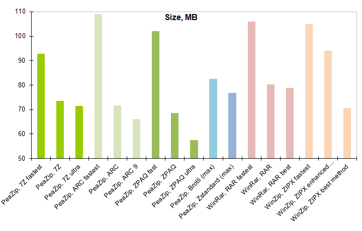

|
|||||||||||||||||||||||||||||||||||||||||||||||||||||||||||||||||||||||||||||||||||||||||||
|
|||||||||||||||||||||||||||||||||||||||||||||||||||||||||||||||||||||||||||||||||||||||||||
Maximum compression ratio resultsZPAQ reached maximum compression ratio, compressing the 303.00 MB input down to 57.60 MB (19.01%), followed by ARC with output reduced to 66.10 MB. ZIPX and 7Z were able to reduce the input size to 70.70 MB and 71.40 MB respectively, and RAR scored the most poor compression performance with 78.90 MB output employing best compression setting. All format shown a significant improvement in compression ratio switching from fastest to best compression settings, but for most formats most of the advantage emerged switching from fastest to default compression settings. Especially, 7Z and RAR format shown very small improvements from default to ultra settings - which, as you can see in following chapter, comes at cost of much longer compression times. The exception to this behavior is ZIPX format, providing a mediocre deflate based compression unless switching to alternate compression algorithms, with maximum compression, comparable to 7Z ultra, being attained using "best method" settings. Maximum compression speed resultsCompression times increases for all format with the increase of compression settings, generally with best returns (in terms of compression ratio improvements) switching from fastest to default compression settings, and diminishing returns switching to ultra/best settings. At maximum compression level, ZIPX is the fastest format, followed by RAR, ARC, and 7Z, ZPAQ being the slowest. Using moderate compression settings, RAR and ARC emerge as the fastest formats. |
|||||||||||||||||||||||||||||||||||||||||||||||||||||||||||||||||||||||||||||||||||||||||||


ConclusionsZPAQ is the winner in terms of maximum attainable compression, but is slower than other formats. ZPAQ at maximum compression level reached a 19.01% compression ratio versus 21.82% reached by ARC at maximum compression level, the second best result of the benchmark. Anyway, even ZPAQ at default level can compare favorably (in terms of compression ratio versus speed tradeoff) with other formats at best compression settings - only ARC at highest level surpassing its compression ratio - with a 10x speed advantage of ZPAQ default vs ZPAQ ultra. For all formats excluding ZIPX, average compression settings represented an optimal tradeoff between compression ratio and compression speed, with diminishing returns for switching to highest compression levels. For all format each compression level increase represented an higher computational cost (with longer compression times), for smaller improvements in compression ratio. For this reason it can be recommended to use other methods than increasing compression level to keep the output below a desired threshold, in example spanning the outpput to multiple volumes of fixed size in order to meet maximum size constrains, or deduplicate input data before compression. This is even more true when compressing data sets containing multimedia, or encrypted files, which generally does not compress well, or does not compress at all regardless employed algorithm/settings. Unlike compression speed, which generally scaled uniformly with increasing of compression level, extraction speed was more correlated with the archive format nature, with 7Z and RAR decompression times remain fast (well below 3 seconds) at any compression level. In brief: What is the most powerful file compressor?ZPAQ is clearly the top performing format in this benchmark focused on maximum attainable compression.What is the overall best compression format?It depends on user's need, with compression ratio being only one factor of the equation.ZPAQ and ARC are the best compressors, but 7Z and RAR formats has a clear advantage in terms of decompression speed, faster than for any other tested format. 7Z vs RAR, which is
the best compressor?
7Z outperformed RAR in terms of
compression ratio at all compression
levels, but RAR outperformed 7Z in terms of compression speed. |
| Tag Cloud file archivers comparison optimize compression performances 7Z format features compression formats comparison compress graphic files lossy and lossless compression compress virtual machines maximum file compression format solid compression option what are zip files download backup utility free 7z rar zip files converter file spanning utility batch compress multiple archives at once RAR compression utility compress files extract 7z rar zip archives extract encrypted files RAR format features ZIP format features Zstandard compression utility free RAR extractor TAR files opener free ZIP files utility Brotli file compressor 7Z files extraction WIM files extraction free ZIPX files opener free archiver utility PAQ files compressor file compression software 64 bit free WinZip Winrar alternative fastest file compression utility portable WinZip WinRar alternative best file compression application SFX Open Source WinZip Winrar alternative for Linux windows rar tar zip files extractor fastest archive decompression utility best file archiving formats what is best file compression format fast drag and drop extraction 64 bit zip application for Windows 7-Zip WinRar comparison PeaZip performances comparison best file compressor |
 DOWNLOADS  All PeaZip downloads PeaZip for Windows 32 bit PeaZip for Windows 64 bit PeaZip Portable PeaZip Linux/BSD |
SUPPORT Online help Frequently Asked Questions More information |
DONATE Support PeaZip project, or donate to FAO, UNICEF and UNESCO from donation page © PeaZip srl: TOS, Privacy |
|